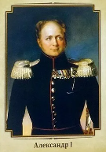

Владимир Святославич

Алекса́ндр I Павлович (12 (23) декабря 1777, Санкт-Петербург — 19 ноября (1 декабря) 1825, Таганрог) — Император и Самодержец Всероссийский (с 12 (24) марта 1801 года), великий князь Финляндский (с 1809 года), царь Польский (с 1815 года), проведший в России умеренно-либеральные реформы. Удостоен особого эпитета в русской историографии — «Благословенный».